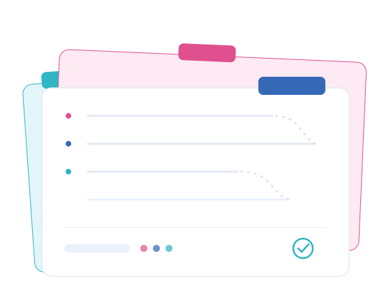

Understand
We get to know the activity, framework and documentation.
In business since 2011 · Montijo, Portugal
Clave de Números provides accounting, tax advisory and management services to companies, sole traders, freelancers and online businesses. We organise the activity and monitor accounting and tax obligations rigorously and on time, so every client can make decisions with greater clarity.

Every company and activity has its own needs. Our accounting, tax and management services adapt to each client’s framework, size, tax obligations and way of working. The service sheets explain what is included, when it is useful and how the support is provided.
Organisation and processing of accounting information, reconciliations and statutory obligations.
See details02Tax advisoryAnalysis of tax implications before decisions, changes or significant transactions.
See details03Management consultingInterpretation of results, costs and cash flow to support decisions.
See details04Tax compliance and obligationsReturns, deadlines and recurring tax obligations monitored throughout the year.
See details05Payroll and HR administrationSalary processing, payslips and related administrative obligations.
See details06Sole traders, freelancers and IRSActivity registration, tax framework and personal income tax obligations.
See details07Online businessesAccounting and tax support for platforms, digital payments and remote services.
See details08Investment projectsOrganisation of information and assumptions for feasibility analysis.
See details09Asset and property administrationDocument organisation and administrative monitoring of assets and property.
See detailsA company, an independent activity, an online business or a specific tax situation all involve different obligations. Identify the profile closest to your reality and discover the areas in which Clave de Números can support your activity.
Accounting, tax compliance, payroll and management information for new, growing or reorganising companies.
Profile 02Activity registration, invoicing, VAT, Social Security and personal income tax.
Profile 03Support for platforms, remote services, multiple payment methods, markets and currencies.
Profile 04Personal income tax, rental income, capital gains, foreign income and property documentation.
Clave de Números grew from a professional path that began in 2011 with the preparation of investment projects for companies. Accounting developed naturally in response to clients’ needs, and the company was incorporated in 2013. Since then, it has grown consistently while maintaining close, long-term relationships.
We get to know the activity, framework and documentation.
We define documents, deadlines and responsibilities.
We process the agreed accounting, tax, payroll or administrative work regularly and communicate what is needed in good time.
We explain obligations and relevant information clearly.
Questions and information are handled in useful time.
Processes are handled with care and responsibility.
Communication is direct and adjusted to each client.
The firm's history is closely tied to small businesses and self-employed activities.
Documentation can be organised remotely across Portugal.
Procedures, deadlines and obligations are explained clearly.
Tell us what you need and where you are in the process. We will respond with guidance suited to your situation.
Get in touch